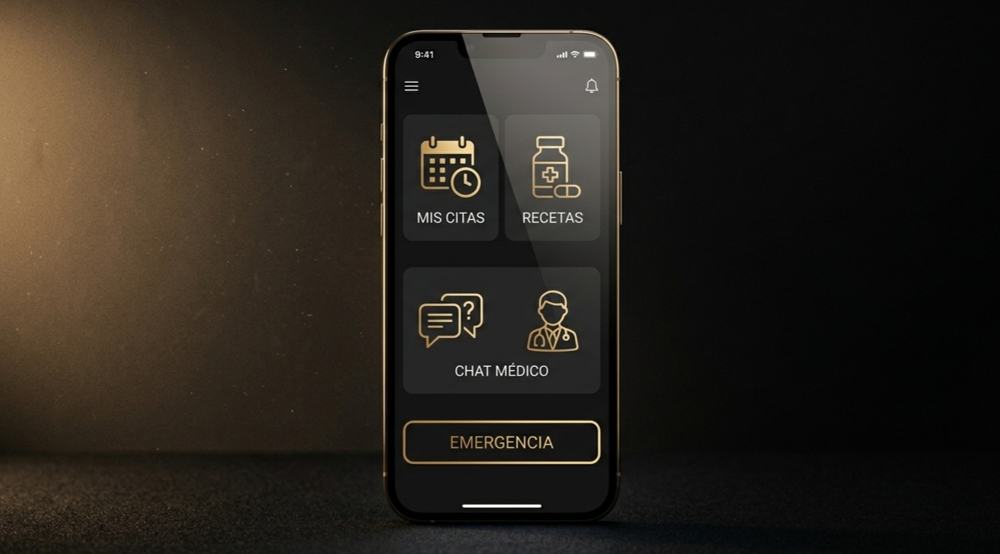

Atención médica moderna, accesible y sin filas
En Chile, los CESFAM cumplen un rol clave en la atención primaria, pero actualmente enfrentan una alta demanda que genera largas filas y tiempos de espera prolongados.
Esta situación afecta especialmente a adultos mayores, quienes presentan dificultades de movilidad y menor acceso a herramientas digitales.
Estas dificultades no solo generan incomodidad, sino que afectan directamente la salud al retrasar diagnósticos y tratamientos.
Desarrollar una solución tecnológica accesible que permita a los adultos mayores solicitar horas médicas de forma remota, rápida y sencilla.
Se busca mejorar la eficiencia del sistema de salud y fomentar la inclusión digital.
Se propone una aplicación móvil diseñada específicamente para adultos mayores, priorizando simplicidad y accesibilidad.
Incluye navegación intuitiva, botones grandes y asistencia visual y por voz.
La aplicación permite un proceso simple: registrarse, seleccionar CESFAM, ver horas disponibles y agendar.

Para los usuarios: mayor autonomía, ahorro de tiempo y mejor calidad de vida.
Para el sistema de salud: menos filas, mejor organización y optimización de recursos.
CESFAM Digital es una solución innovadora que mejora el acceso a la salud, fomenta la inclusión digital y contribuye a un sistema más eficiente y centrado en las personas.